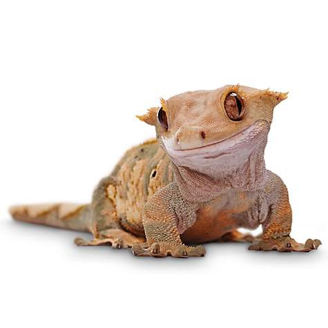
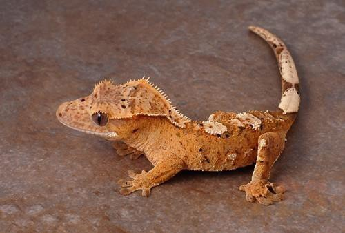
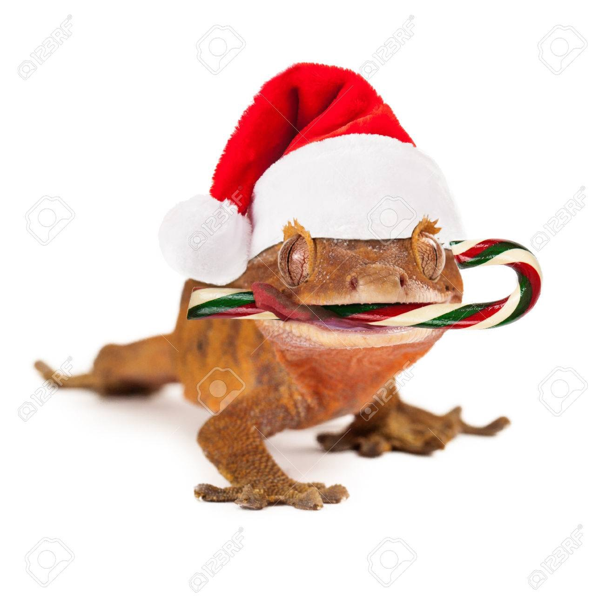

Canard est le nom commun de nombreuses espèces de la famille des oiseaux aquatiques Anatidae, qui comprend également des cygnes et des oies. Les canards sont répartis dans plusieurs sous-familles de la famille des Anatidés; ils ne représentent pas un groupe monophylétique (le groupe de tous les descendants d'une même espèce ancestrale commune), mais une forme de taxon, puisque les cygnes et les oies ne sont pas considérés comme des canards. Les canards sont principalement des oiseaux aquatiques, généralement plus petits que les cygnes et les oies, et peuvent être trouvés en eau douce ou en eau de mer.
Crested Geckos



Le gecko à crête ou gecko à cils (Correlophus ciliatus) est une espèce de gecko originaire du sud de la Nouvelle-Calédonie. En 1866, le gecko à crête fut décrit par un zoologiste français appelé Alphone Guichenot. On pensait que cette espèce était éteinte jusqu'à sa redécouverte en 1994 lors d'une expédition menée par Robert Seipp. Outre plusieurs espèces de Rhacodactylus, la Convention sur le commerce international des espèces de faune et de flore sauvages menacées d'extinction envisage de lui conférer un statut de protection. Il est populaire dans le commerce des animaux de compagnie.